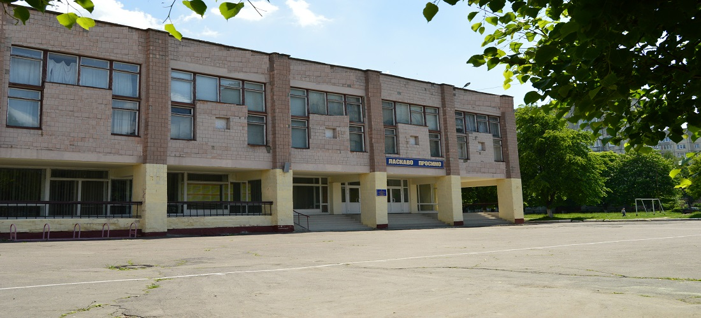
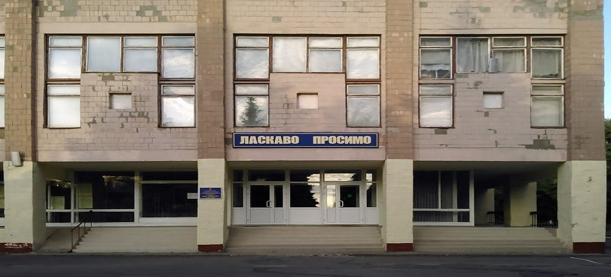

Веб-сайт: http://english-work-page.webnode.com.ua/

Веб-сайт: http://socpedagoglvpu.webnode.com.ua/
Веб-сайт: http://fizika-lutske-vpu.webnode.com.ua/
Веб-сайт: http://kasianchuk-mariia.webnode.com.ua/
Веб-сайт: http://ivanova-lvpu.livejournal.com/
Веб-сайт: http://polyservice9.wix.com/padko
Веб-сайт: http://mij-svit6.webnode.com.ua/
Веб-сайт: http://kravchuk.000webhostapp.com/
Веб-сайт: https://ihor2605200061.wixsite.com/english-teacher
Веб-сайт: https://rizykms.wixsite.com/rizyk
Веб-сайт: https://vaqcnth.wixsite.com/zow1
Веб-сайт: https://psaltyra.wixsite.com/psaltyra